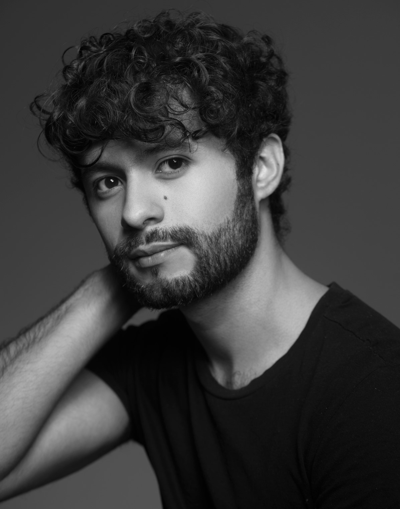

Sobre el Actor
">
Actor mexicano egresado de la carrera de actuación en Casazul Artes Escénicas Argos. A nivel universitario ha participado en montajes bajo la dirección de grandes figuras del teatro como Claudia Rios, Alberto Rosas, Jorge Ávalos y José Alberto Gallardo. A nivel profesional ha trabajado en producciones de Tv Azteca y Televisa Puebla. Actualmente forma parte del equipo de producción de la obra Matteo Ricci dirigida por Luis de Tavira.